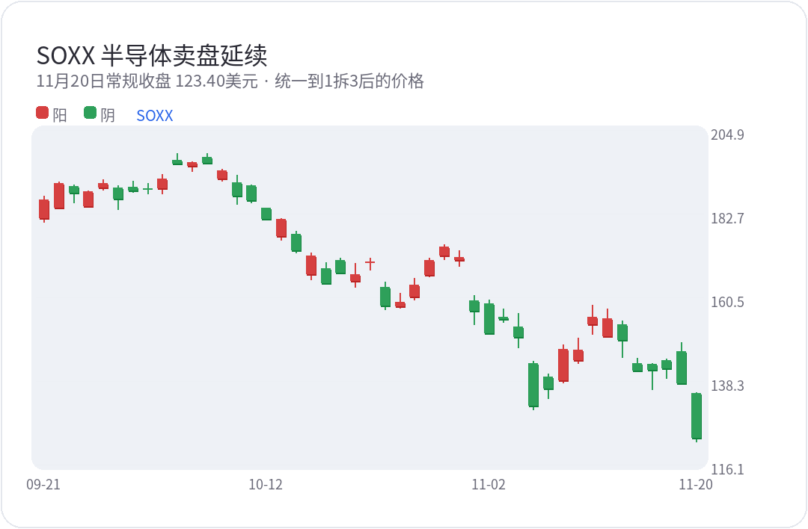
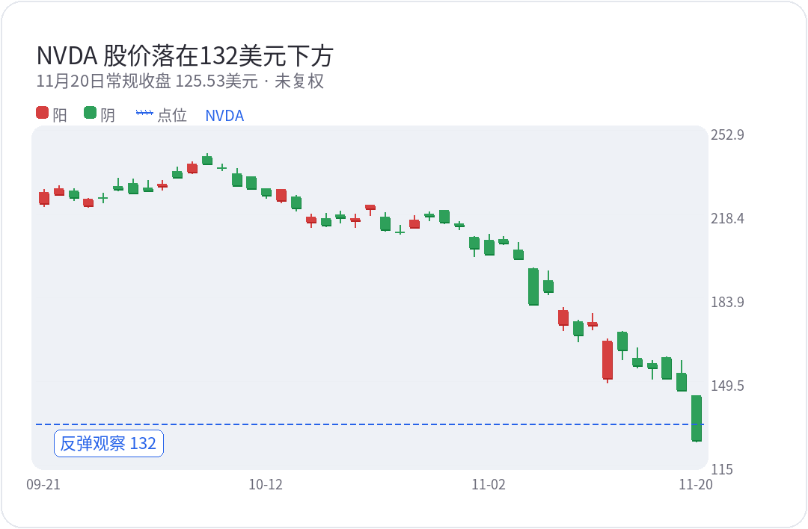
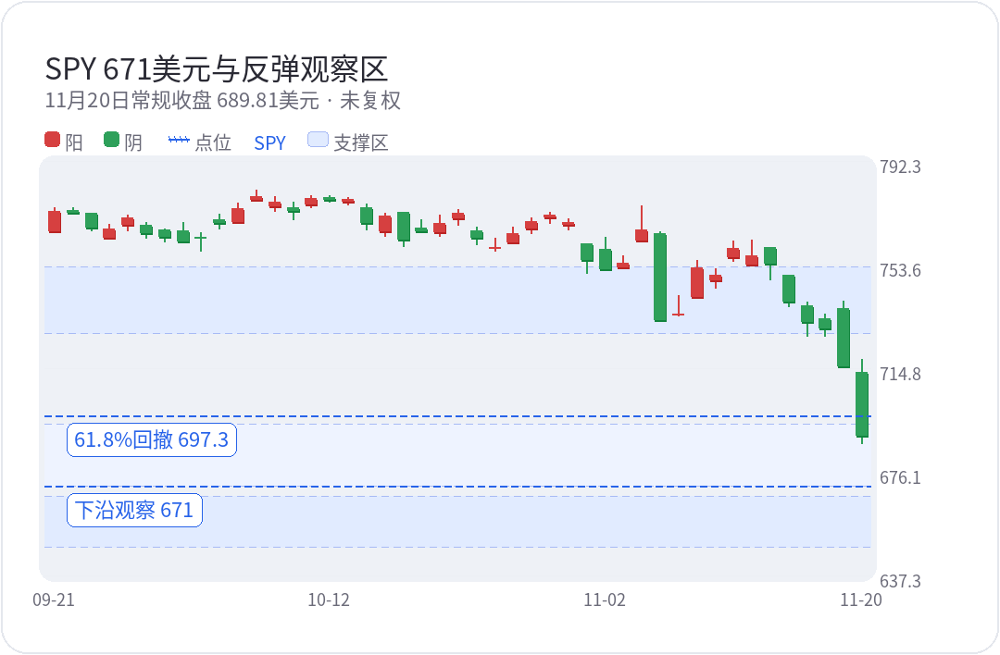
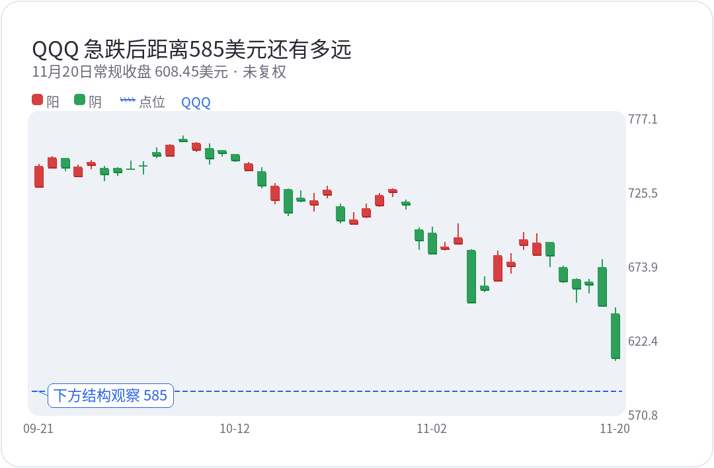
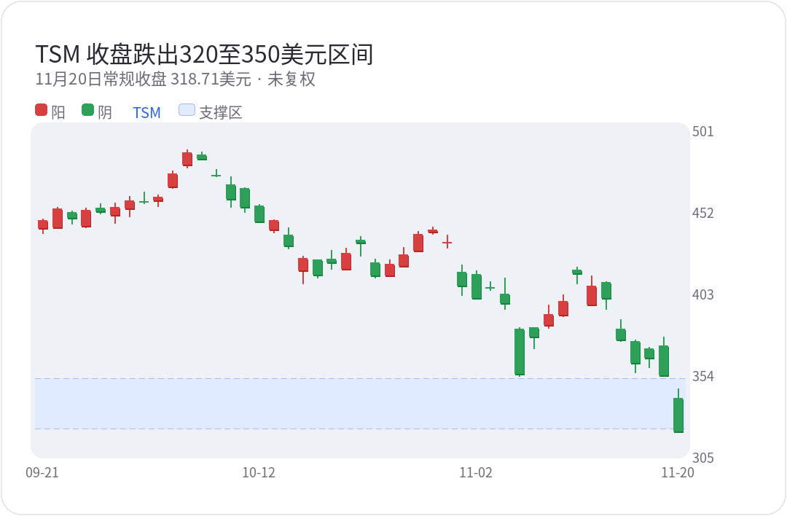

<div style="margin:0;padding:0;background:#f5f7fa;color:#2a2a34;font-size:16px;line-height:1.9;font-family:-apple-system,BlinkMacSystemFont,'SF Pro Text','PingFang SC','Hiragino Sans GB','Microsoft YaHei',Arial,sans-serif;font-variant-numeric:tabular-nums;font-feature-settings:'tnum' 1,'lnum' 1;text-align:left !important;text-align-last:left;letter-spacing:0;word-spacing:normal;white-space:normal;word-break:normal;box-sizing:border-box;"><div style="margin:0;background:#ffffff;padding:28px 22px 44px 22px;box-sizing:border-box;text-align:left !important;text-align-last:left;letter-spacing:0;word-spacing:normal;white-space:normal;word-break:normal;"><p style="display:block;width:100%;margin:0 0 12px 0;padding:0;color:#2763e9;font-size:10px;line-height:1.6;font-weight:650;letter-spacing:0.12em;text-align:center !important;text-align-last:center;word-spacing:normal;white-space:normal;word-break:normal;box-sizing:border-box;">美股 · 期权 · 资讯 · 观点</p><div style="margin:0 0 0 0;padding:28px 0 0 0;text-align:left !important;text-align-last:left;letter-spacing:0;word-spacing:normal;white-space:normal;word-break:normal;box-sizing:border-box;"><div style="margin:0 0 12px 0;padding:0;text-align:left !important;line-height:1.2;border:0;display:flex;align-items:center;gap:10px;text-align-last:left;letter-spacing:0;word-spacing:normal;white-space:normal;word-break:normal;box-sizing:border-box;"><span style="display:inline-block;flex:0 0 auto;vertical-align:middle;color:#2763e9;font-size:12px;font-weight:850;letter-spacing:0.12em;line-height:1.2;text-transform:uppercase;border:0;box-sizing:border-box;">0 · FOCUS</span><span style="display:block;flex:1 1 auto;min-width:36px;vertical-align:middle;height:1px;margin:0 0 2px 0;background:#2763e9;line-height:1px;font-size:0;border:0;box-sizing:border-box;"></span></div><p style="margin:0 0 16px 0;padding:0;color:#2a2a34;font-size:22px;line-height:1.45;font-weight:850;text-align:left !important;letter-spacing:0;text-align-last:left;word-spacing:normal;white-space:normal;word-break:normal;box-sizing:border-box;">指数越跌越快，卖盘却更集中</p><p style="margin:0 0 16px 0;padding:0;color:#454550;font-size:16px;line-height:1.9;font-weight:400;text-align:left !important;letter-spacing:0;word-spacing:normal;white-space:normal;word-break:normal;text-align-last:left;box-sizing:border-box;">11月20日，标普500收在6910.39点，单日跌3.70%，全周跌8.61%，连跌七个交易日，为2020年2月以来最长。纳斯达克综合指数跌5.28%，纳斯达克100跌5.61%，道指跌1.93%，罗素2000跌2.76%。VIX衡量标普期权定价里的预期波动，盘中一度到40.03，收在35.89，较前日涨约26%。收盘时，保护仓位的期权依然贵。</p><div class="rhino-bar-chart" style="padding:16px 18px;margin:18px 0 26px;background:#f8fbff;border-radius:12px;border:1px solid #e1eafa;box-sizing:border-box;"><p style="font-size:13px;color:#2763e9;font-weight:750;margin:0 0 8px;box-sizing:border-box;">11月20日四大指数收盘跌幅</p><div style="margin:9px 0 13px;box-sizing:border-box;"><div style="display:flex;justify-content:space-between;color:#454550;font-size:13px;gap:8px;box-sizing:border-box;"><span style="min-width:0;overflow-wrap:anywhere;box-sizing:border-box;">标普500</span><span style="font-weight:700;text-align:right;overflow-wrap:anywhere;box-sizing:border-box;"><span style="white-space:nowrap;box-sizing:border-box;">-3.7%</span></span></div><div style="height:11px;background:#e7edf6;border-radius:5px;overflow:hidden;margin-top:5px;box-sizing:border-box;"><div style="height:11px;width:70%;background:#2763e9;border-radius:5px;box-sizing:border-box;"></div></div></div><div style="margin:9px 0 13px;box-sizing:border-box;"><div style="display:flex;justify-content:space-between;color:#454550;font-size:13px;gap:8px;box-sizing:border-box;"><span style="min-width:0;overflow-wrap:anywhere;box-sizing:border-box;">纳指综合</span><span style="font-weight:700;text-align:right;overflow-wrap:anywhere;box-sizing:border-box;"><span style="white-space:nowrap;box-sizing:border-box;">-5.28%</span></span></div><div style="height:11px;background:#e7edf6;border-radius:5px;overflow:hidden;margin-top:5px;box-sizing:border-box;"><div style="height:11px;width:100%;background:#2763e9;border-radius:5px;box-sizing:border-box;"></div></div></div><div style="margin:9px 0 13px;box-sizing:border-box;"><div style="display:flex;justify-content:space-between;color:#454550;font-size:13px;gap:8px;box-sizing:border-box;"><span style="min-width:0;overflow-wrap:anywhere;box-sizing:border-box;">道指</span><span style="font-weight:700;text-align:right;overflow-wrap:anywhere;box-sizing:border-box;"><span style="white-space:nowrap;box-sizing:border-box;">-1.93%</span></span></div><div style="height:11px;background:#e7edf6;border-radius:5px;overflow:hidden;margin-top:5px;box-sizing:border-box;"><div style="height:11px;width:37%;background:#2763e9;border-radius:5px;box-sizing:border-box;"></div></div></div><div style="margin:9px 0 13px;box-sizing:border-box;"><div style="display:flex;justify-content:space-between;color:#454550;font-size:13px;gap:8px;box-sizing:border-box;"><span style="min-width:0;overflow-wrap:anywhere;box-sizing:border-box;">罗素2000</span><span style="font-weight:700;text-align:right;overflow-wrap:anywhere;box-sizing:border-box;"><span style="white-space:nowrap;box-sizing:border-box;">-2.76%</span></span></div><div style="height:11px;background:#e7edf6;border-radius:5px;overflow:hidden;margin-top:5px;box-sizing:border-box;"><div style="height:11px;width:52%;background:#2763e9;border-radius:5px;box-sizing:border-box;"></div></div></div></div><p style="margin:0 0 16px 0;padding:0;color:#454550;font-size:16px;line-height:1.9;font-weight:400;text-align:left !important;letter-spacing:0;word-spacing:normal;white-space:normal;word-break:normal;text-align-last:left;box-sizing:border-box;">追踪美国半导体股票的 <strong style="color:#2a2a34;font-weight:700;box-sizing:border-box;">SOXX</strong> 收在123.40美元，较上一交易日跌10.55%，全周跌约17.35%。费城半导体指数本身跌约10.73%。标普成分收盘快照中，周五有376只下跌，少于周四的464只。必需消费是唯一收涨的标普行业板块。半导体和大型科技股同时下挫，在市值加权指数里，少数大股票就能拉低全天收盘。防御股可以接到一部分资金。指数要站稳，还得看权重最大的那批股票何时有人买。</p><p style="margin:4px 0 16px 0;padding:0;text-align:center !important;text-align-last:center;word-spacing:normal;white-space:normal;word-break:normal;box-sizing:border-box;"></p></div><div style="margin:30px 0 0 0;padding:28px 0 0 0;text-align:left !important;text-align-last:left;letter-spacing:0;word-spacing:normal;white-space:normal;word-break:normal;box-sizing:border-box;"><div style="margin:0 0 12px 0;padding:0;text-align:left !important;line-height:1.2;border:0;display:flex;align-items:center;gap:10px;text-align-last:left;letter-spacing:0;word-spacing:normal;white-space:normal;word-break:normal;box-sizing:border-box;"><span style="display:inline-block;flex:0 0 auto;vertical-align:middle;color:#2763e9;font-size:12px;font-weight:850;letter-spacing:0.12em;line-height:1.2;text-transform:uppercase;border:0;box-sizing:border-box;">1 · FOCUS</span><span style="display:block;flex:1 1 auto;min-width:36px;vertical-align:middle;height:1px;margin:0 0 2px 0;background:#2763e9;line-height:1px;font-size:0;border:0;box-sizing:border-box;"></span></div><p style="margin:0 0 16px 0;padding:0;color:#2a2a34;font-size:22px;line-height:1.45;font-weight:850;text-align:left !important;letter-spacing:0;text-align-last:left;word-spacing:normal;white-space:normal;word-break:normal;box-sizing:border-box;">英伟达收在125.53美元，跌破132美元后看什么</p><p style="margin:0 0 16px 0;padding:0;color:#454550;font-size:16px;line-height:1.9;font-weight:400;text-align:left !important;letter-spacing:0;word-spacing:normal;white-space:normal;word-break:normal;text-align-last:left;box-sizing:border-box;"><strong style="color:#2a2a34;font-weight:700;box-sizing:border-box;">NVDA</strong> 收在125.53美元，单日跌14.01%，全周跌22.92%，跌破132美元。美东下午2点13分，路透援引两名知情人士称，美国证券交易委员会正在调查英伟达可能存在的会计问题。报道发布时，SEC拒绝置评，英伟达未立即回应。调查范围和具体会计事项仍未公开。消息发出前，股价当天已经跌逾6%。</p><p style="margin:4px 0 16px 0;padding:0;text-align:center !important;text-align-last:center;word-spacing:normal;white-space:normal;word-break:normal;box-sizing:border-box;"></p><p style="margin:0 0 16px 0;padding:0;color:#454550;font-size:16px;line-height:1.9;font-weight:400;text-align:left !important;letter-spacing:0;word-spacing:normal;white-space:normal;word-break:normal;text-align-last:left;box-sizing:border-box;">日经亚洲另据消息人士报道，受新的美国出口限制影响，至少两家服务器合作伙伴暂停向东南亚客户发货。若暂停持续到影响客户验收，部分交付和收入确认就可能延后。暂停多久、涉及多少订单，公司和合作伙伴还没有给出答案。股价如果反抽132美元，能不能站稳，要结合接下来的公司说明和实际交付看。</p></div><div style="margin:30px 0 0 0;padding:28px 0 0 0;text-align:left !important;text-align-last:left;letter-spacing:0;word-spacing:normal;white-space:normal;word-break:normal;box-sizing:border-box;"><div style="margin:0 0 12px 0;padding:0;text-align:left !important;line-height:1.2;border:0;display:flex;align-items:center;gap:10px;text-align-last:left;letter-spacing:0;word-spacing:normal;white-space:normal;word-break:normal;box-sizing:border-box;"><span style="display:inline-block;flex:0 0 auto;vertical-align:middle;color:#2763e9;font-size:12px;font-weight:850;letter-spacing:0.12em;line-height:1.2;text-transform:uppercase;border:0;box-sizing:border-box;">2 · SEMIS</span><span style="display:block;flex:1 1 auto;min-width:36px;vertical-align:middle;height:1px;margin:0 0 2px 0;background:#2763e9;line-height:1px;font-size:0;border:0;box-sizing:border-box;"></span></div><p style="margin:0 0 16px 0;padding:0;color:#2a2a34;font-size:22px;line-height:1.45;font-weight:850;text-align:left !important;letter-spacing:0;text-align-last:left;word-spacing:normal;white-space:normal;word-break:normal;box-sizing:border-box;">谷歌在调整哪种芯片，苹果在招什么人</p><p style="margin:0 0 16px 0;padding:0;color:#454550;font-size:16px;line-height:1.9;font-weight:400;text-align:left !important;letter-spacing:0;word-spacing:normal;white-space:normal;word-break:normal;text-align-last:left;box-sizing:border-box;">分析师郭明錤依据供应链调研估计，谷歌明年计划采用的博通设计 TPU 8i 系列可能减少约100万颗，约占原计划两成。谷歌和博通尚未确认这项计划。估计指的是这一型号的计划出货量，这笔调整会不会被其他型号补上，还得看整个采购计划。数据中心能接入多少电力、不同型号能承担哪些训练与推理任务，会影响订单最终落到哪家供应商。</p><p style="margin:0 0 16px 0;padding:0;color:#454550;font-size:16px;line-height:1.9;font-weight:400;text-align:left !important;letter-spacing:0;word-spacing:normal;white-space:normal;word-break:normal;text-align-last:left;box-sizing:border-box;">另有供应链报道说，谷歌在测试英特尔先进封装后，又接洽台积电寻求封装支持。具体订单和产能尚未获公司证实，报道讨论的也是封装环节。真正影响收入的是拿到订单后能否按时交货，接洽本身还早。</p><p style="margin:0 0 16px 0;padding:0;color:#454550;font-size:16px;line-height:1.9;font-weight:400;text-align:left !important;letter-spacing:0;word-spacing:normal;white-space:normal;word-break:normal;text-align-last:left;box-sizing:border-box;">彭博据招聘信息和知情人士报道，苹果在研发能跨应用操作、浏览网页和编写代码的AI代理。苹果现有的设备和应用生态给了它分发入口，报道没有给出正式产品发布日期。苹果上一财年用于购买厂房、设备等的现金支出约90.41亿美元，研发费用约458亿美元。就算入口在手机和电脑上，模型研发、云端推理和租用外部设施都要花钱。</p></div><div style="margin:30px 0 0 0;padding:28px 0 0 0;text-align:left !important;text-align-last:left;letter-spacing:0;word-spacing:normal;white-space:normal;word-break:normal;box-sizing:border-box;"><div style="margin:0 0 12px 0;padding:0;text-align:left !important;line-height:1.2;border:0;display:flex;align-items:center;gap:10px;text-align-last:left;letter-spacing:0;word-spacing:normal;white-space:normal;word-break:normal;box-sizing:border-box;"><span style="display:inline-block;flex:0 0 auto;vertical-align:middle;color:#2763e9;font-size:12px;font-weight:850;letter-spacing:0.12em;line-height:1.2;text-transform:uppercase;border:0;box-sizing:border-box;">3 · FOCUS</span><span style="display:block;flex:1 1 auto;min-width:36px;vertical-align:middle;height:1px;margin:0 0 2px 0;background:#2763e9;line-height:1px;font-size:0;border:0;box-sizing:border-box;"></span></div><p style="margin:0 0 16px 0;padding:0;color:#2a2a34;font-size:22px;line-height:1.45;font-weight:850;text-align:left !important;letter-spacing:0;text-align-last:left;word-spacing:normal;white-space:normal;word-break:normal;box-sizing:border-box;">期权到期之后，SPY还得守住哪条线</p><p style="margin:0 0 16px 0;padding:0;color:#454550;font-size:16px;line-height:1.9;font-weight:400;text-align:left !important;letter-spacing:0;word-spacing:normal;white-space:normal;word-break:normal;text-align-last:left;box-sizing:border-box;">标普在周五跌穿7084点一带。一些趋势跟随模型把这里列为减仓观察位，破位可能增加程序卖单。周五又是月度期权到期日，在做市商净负Gamma的情境下，价格下跌可能要求他们继续卖出对冲。周五下跌时，这两种机制都有可能放大波动，实际份额没法从当天跌幅反推。旧合约到期以后，一部分对冲会退出，新仓位怎么建还得继续看。</p><p style="margin:0 0 16px 0;padding:0;color:#454550;font-size:16px;line-height:1.9;font-weight:400;text-align:left !important;letter-spacing:0;word-spacing:normal;white-space:normal;word-break:normal;text-align-last:left;box-sizing:border-box;">跟踪标普500的 <strong style="color:#2a2a34;font-weight:700;box-sizing:border-box;">SPY</strong> 收在689.81美元，已经进入671至694美元的观察带，距下沿671美元还有18.81美元，约2.7%。用4月2日最低645.11美元和10月6日最高781.62美元计算，61.8%向下回撤位约697.26美元，周五已经收在它下方。671美元则是接下来用开盘和收盘确认的情景观察位。</p><p style="margin:4px 0 16px 0;padding:0;text-align:center !important;text-align-last:center;word-spacing:normal;white-space:normal;word-break:normal;box-sizing:border-box;"></p><p style="margin:0 0 16px 0;padding:0;color:#454550;font-size:16px;line-height:1.9;font-weight:400;text-align:left !important;letter-spacing:0;word-spacing:normal;white-space:normal;word-break:normal;text-align-last:left;box-sizing:border-box;">如果开盘或收盘有效跌破671美元，接下来先看648至667美元区间能否接住卖盘，随后再看反弹能不能站回671美元。若反弹后又跌破648美元，下行风险会进一步增大。若低位稳住并出现持续买盘，则可观察728至753美元能否收复。这个区域包含约732.76美元的未复权200日均线。按分红调整后的口径，200日均线约730.29美元。指数估值处于6800至7000点的情景区间时，盈利预期若继续下修，价格依然可以往下找买盘。</p><p style="margin:0 0 16px 0;padding:0;color:#454550;font-size:16px;line-height:1.9;font-weight:400;text-align:left !important;letter-spacing:0;word-spacing:normal;white-space:normal;word-break:normal;text-align-last:left;box-sizing:border-box;">跟踪纳斯达克100的 <strong style="color:#2a2a34;font-weight:700;box-sizing:border-box;">QQQ</strong> 收在608.45美元，单日跌5.67%，距离585美元还有约3.9%。急跌之后，空头回补可以带来一波反弹。要判断有没有新的资金接上，得看反弹时成交量和上涨家数能不能一起改善。</p><p style="margin:4px 0 16px 0;padding:0;text-align:center !important;text-align-last:center;word-spacing:normal;white-space:normal;word-break:normal;box-sizing:border-box;"></p><p style="margin:0 0 16px 0;padding:0;color:#454550;font-size:16px;line-height:1.9;font-weight:400;text-align:left !important;letter-spacing:0;word-spacing:normal;white-space:normal;word-break:normal;text-align-last:left;box-sizing:border-box;">下周感恩节，周一到周三正常交易，周四休市，周五美东下午1点提前收盘。短周更容易出现成交清淡的时段。早盘即使反抽，也要等收盘再看有多少股票跟上。</p></div><div style="margin:30px 0 0 0;padding:28px 0 0 0;text-align:left !important;text-align-last:left;letter-spacing:0;word-spacing:normal;white-space:normal;word-break:normal;box-sizing:border-box;"><div style="margin:0 0 12px 0;padding:0;text-align:left !important;line-height:1.2;border:0;display:flex;align-items:center;gap:10px;text-align-last:left;letter-spacing:0;word-spacing:normal;white-space:normal;word-break:normal;box-sizing:border-box;"><span style="display:inline-block;flex:0 0 auto;vertical-align:middle;color:#2763e9;font-size:12px;font-weight:850;letter-spacing:0.12em;line-height:1.2;text-transform:uppercase;border:0;box-sizing:border-box;">4 · FOCUS</span><span style="display:block;flex:1 1 auto;min-width:36px;vertical-align:middle;height:1px;margin:0 0 2px 0;background:#2763e9;line-height:1px;font-size:0;border:0;box-sizing:border-box;"></span></div><p style="margin:0 0 16px 0;padding:0;color:#2a2a34;font-size:22px;line-height:1.45;font-weight:850;text-align:left !important;letter-spacing:0;text-align-last:left;word-spacing:normal;white-space:normal;word-break:normal;box-sizing:border-box;">台积电跌出观察区，加仓条件还差一步</p><p style="margin:0 0 16px 0;padding:0;color:#454550;font-size:16px;line-height:1.9;font-weight:400;text-align:left !important;letter-spacing:0;word-spacing:normal;white-space:normal;word-break:normal;text-align-last:left;box-sizing:border-box;"><strong style="color:#2a2a34;font-weight:700;box-sizing:border-box;">TSM</strong> 周五跌9.48%，收在318.71美元，盘中最低约318.48美元。股价穿过320至350美元观察区，最后收在下沿以下。一位投资者在公开交易复盘中把进入区间和放量止跌列作两个条件，当天准备的加仓没有执行。要重新评估这档价位，先等收盘能站回区间，再看成交量能否跟上。</p><p style="margin:4px 0 16px 0;padding:0;text-align:center !important;text-align-last:center;word-spacing:normal;white-space:normal;word-break:normal;box-sizing:border-box;"></p><p style="margin:0 0 16px 0;padding:0;color:#454550;font-size:16px;line-height:1.9;font-weight:400;text-align:left !important;letter-spacing:0;word-spacing:normal;white-space:normal;word-break:normal;text-align-last:left;box-sizing:border-box;">同一份计划里，微软仍是最大的单只仓位，谷歌与特斯拉没有新动作，直觉外科和奈飞继续等各自的条件，旅行者保险保持底仓。几只股票同时受科技估值牵动，分散到不同代码，跌起来也可能一起跌。先等价格站住、成交跟上，再看买盘是否从少数股票扩散开。</p></div><p style="margin:28px 0 0 0;padding:22px 0 0 0;color:#9a9aa8;font-size:12px;line-height:1.8;text-align:center !important;text-align-last:center;word-spacing:normal;white-space:normal;word-break:normal;box-sizing:border-box;">免责声明：本文仅为个人市场观察和交易复盘，不构成任何投资建议；市场有风险，交易需谨慎。</p></div></div>
